In this document we demonstrate how to generate unstructured 2D meshes for oomph-lib, using Jonathan Shewchuk's Triangle library from within an oomph-lib driver code. This complements the discussion in another tutorial where we illustrated how to build oomph-lib meshes using the output generated when Triangle is used to create the mesh externally.
In addition, we demonstrate
- how to create meshes with polygonal or curvilinear boundaries
and
- how to adapt (re-generate) these meshes based on spatial error estimates.
Here we restrict ourselves to the solution of problems in fixed domains. Other tutorials discuss more advanced applications involving moving meshes, e.g.
- The motion of an ellipse in a shear flow
- The propagation of a bubble in a channel – mesh generation and adaptation for free-surface flows.
Overview of mesh generation procedures
Meshes with polygonal boundaries
If the domain has polygonal outer (and possibly internal) boundaries, the mesh generation process follows a similar pattern to that required in the external use of Triangle , but using oomph-lib classes to represent the required data. We define the polygonal boundaries using TriangleMeshPolyLines, which represent distinct mesh boundaries and are defined by a series of vertex coordinates. Multiple TriangleMeshPolyLines can be combined to define (closed) TriangleMeshPolygons. These are then used to create an unstructured mesh with a pre-determined target area for all elements, via an interface to Triangle .
One particular feature of oomph-lib's interface to Triangle is that each closed TriangleMeshPolygon must contain at least two distinct TriangleMeshPolyLines, each with its own boundary ID. This is because every Node can only have a single-valued boundary coordinate but if the boundary is closed there would be a discontinuity in the coordinate value. (For example, a standard representation would have 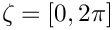 , but the node at 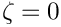 should also have 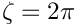 and this is not possible.) The sketch below shows a representative domain as well as two legal and one illegal representations of the domain boundaries. Note that the boundaries can be enumerated in an arbitrary fashion.

Meshes with curvilinear boundaries
It is also possible to discretise domains with curvilinear boundaries as shown in the sketch below. Assuming that each curvilinear boundary is represented by a GeomObject that specifies the position vector 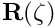 to a point on the curvilinear boundary as a function of some surface coordinate  , we split each closed boundary into (at least) two distinct
, we split each closed boundary into (at least) two distinct TriangleMeshCurviLines – the curvilinear equivalents of TriangleMeshPolyLines. Each TriangleMeshCurviLine is constructed from a pointer to the GeomObject and the start and end values of the boundary coordinate  along the relevant part of the curvilinear boundary. The
along the relevant part of the curvilinear boundary. The TriangleMeshCurviLines are then combined to a TriangleMeshClosedCurve – the general closed curve.
The mesh is then created in a two-stage process: All TriangleMeshCurviLines are sampled at a certain number of points (specified by the user in the constructor) to create the vertices for a polyline representation of the boundary. This polygonal representation of the boundaries is used by Triangle to generate the mesh. Finally, nodes on curvilinear boundaries are "snapped" onto the actual curvilinear boundary.
Overview of mesh adaptation methodology
The methodology employed to adapt oomph-lib's unstructured meshes differs from that used for structured meshes. Specifically, rather than sub-dividing elements in which the error estimate exceeds a threshold and merging elements in which the solution is "too accurate", we completely re-generate the mesh and project the solution from the old to the new mesh. This is because we originally developed the underlying methodology to solve free-boundary problems in which the domain undergoes such large deformations that re-meshing is required. The ability to adjust the element sizes guided by spatial error estimates when re-meshing the domain is a simple fringe benefit.
A number of issues are important:
- To facilitate mesh adaptation in free-boundary problems, we re-generate the polygonal representation of the boundary, using the vertex nodes of the elements on the boundary to re-define the polygon. The number of vertices in the polygons that define the mesh boundaries will therefore generally change during the mesh adaptation process. This is discussed in more detail in another tutorial.
- The mesh (and thus its constituent elements) are completely re-generated when the mesh is adapted, and so it is necessary to "complete
the build" of all elements after each mesh adaptation. For instance, pointers to problem parameters (Reynolds numbers, source functions, etc) must be re-set after the adaptation since they cannot (easily) be passed from the old to the new mesh.
- When projecting the solution from the old to the new mesh, we project
- all unknowns and their associated history values (if any)
- the history values of the nodal positions. This is important for moving mesh problems where the mesh velocity is required to evaluate the ALE time-derivatives.
- all unknowns and their associated history values (if any)
- The ability to automatically project the solution from the old to the new mesh requires the elements, of type
ELEMENT, say, to be wrapped in the templatedProjectableElement<ELEMENT>class. This class requires the specification of various element characteristics (such as the number of fields to be projected, the number of history values, etc) in the form of virtual functions. This is much more straightforward than upgrading an existing element to become a refineable element for use in an adaptive computation on a structured mesh because the "mesh adaptation by mesh re-generation" avoids the creation of hanging nodes. See the section Upgrading elements to become "projectable" for a slightly more detailed discussion of this aspect.
- Note that we do not apply any boundary conditions during the projection of these fields. This decision was not taken out of laziness but because the interfaces required to specify which boundary conditions to enforce and which ones to relax during the projection were too unwieldy. It is therefore important to re-apply boundary conditions and boundary values after each adaptation.
We recommend using the Problem::actions_after_adapt() function to re-assign boundary conditions and to complete the build of all elements after the adaptation.
Apart from these issues, the user interfaces to the mesh adaptation functions are exactly the same as for structured meshes. Specifically, it is possible to specify maximum and minimum element sizes and target values for the error such that the mesh is refined in regions where the error estimate is too large'' and unrefined where it is too small''.
Typically, the most computationally expensive stage of the mesh regeneration procedure is the multi-domain setup procedure which identifies corresponding points in the old and new meshes. In "cheap" problems, such as the Poisson problem discussed below, the cost of the mesh regeneration can exceed the cost of the subsequent solve, but in most "hard" problems (such as the ones listed at the beginning of this tutorial) the cost of the mesh regeneration is modest (and, in the case of large-displacement free-boundary problems, unavoidable anyway).
An example: The adaptive solution of Poisson's equations on an unstructured mesh
As an example we consider the adaptive solution of Poisson's equation
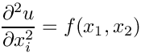
in a circular domain that contains an elliptical and a polygonal hole. As in many previous examples, we apply Dirichlet boundary conditions on all domain boundaries and choose the boundary values and the source function 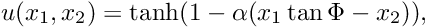 such that the exact solution of the problem is given by
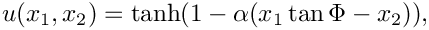
which approaches a step function, oriented at an angle 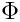 within the  plane, as 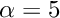 becomes large. The figure below shows contour plots of the solution for 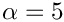 for various angles . It illustrates how the mesh adaptation adjusts the mesh such the smallest elements are located in the region where the solution undergoes rapid change.
plane, as 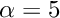 becomes large. The figure below shows contour plots of the solution for 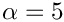 for various angles . It illustrates how the mesh adaptation adjusts the mesh such the smallest elements are located in the region where the solution undergoes rapid change.

Global parameters and functions
Following our usual practice, we use a namespace to define the source function and the exact solution.
The driver code
We start by processing command line arguments which allow us to run the code in self-test mode and build the problem with "projectable" six-noded triangular Poisson elements.
We then perform a parameter study, solving the problem for various orientations of the "step" and allowing a certain number of spatial adaptations per solve. (If the code is run in self-test mode, we perform fewer steps and allow for less adaptation to speed up the computation.)
The problem class
The problem class contains the usual member functions. As discussed above, the boundary conditions and the source function have to be re-specified after every mesh adaptation since the adapted mesh contains completely new elements. This is done in the function complete_problem_setup(), discussed below, which is called from the Problem constructor and from actions_after_adapt(). We re-assign the Dirichlet boundary conditions in actions_before_newton_solve(), using a second helper function apply_boundary_conditions():
The Problem constructor
Most of the problem constructor is concerned with the specification of the mesh boundaries. We start by generating a GeomObject that describes the circular outer boundary of the domain.
This GeomObject is now used to describe the outer boundary in terms of a TriangleMeshClosedCurve object, a base class which can represent polygonal and curvilinear boundaries. We start by providing a pointer to this (yet-to-be-built) object.
As discussed above, the closed outer boundary must be broken up into (at least) two distinct sub-boundaries to allow oomph-lib to automatically refine and setup boundary coordinates. We therefore create two TriangleMeshCurviLines, specifying
- the
GeomObjectthat provides the exact curvilinear representation of the boundary,
- the start and end coordinates of the boundary on that
GeomObject,
- the number of straight-line segments used to represent this boundary during the initial phase of the mesh generation process. Recall that nodes on this boundary are "snapped" onto the exact curvilinear boundary after the initial mesh is generated – the number of segments should therefore be sufficiently large to ensure that the "snapping" does not distort the elements next to the boundary too much. See How many vertices should I use to sample my curvilinear boundary? for a more detailed discussion of this issue.
We choose five boundary segments for the first TriangleMeshCurviLine which represents the upper half of the boundary which we label as boundary 0,
and eight segments for the lower half which we label as boundary 1:
We then combine the two TriangleMeshCurviLines to a TriangleMeshClosedCurve which describes the outer boundary.
Next we deal with the two inner (hole) boundaries
The first hole is a polygon whose 12 vertices we distribute along a circle of radius 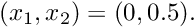 , centred at 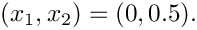 As above, we break the closed boundary into two distinct sub-boundaries – this time represented by TriangleMeshPolyLines:
We create the vertex coordinates for the upper half of the polygonal hole,
and build the TriangleMeshPolyLine, specifying a boundary ID:
We repeat the exercise for the lower half which we turn into boundary 4:
Finally, we build the polygonal hole itself, specifying its constituent TriangleMeshPolyLines and the coordinate of a point inside the hole, which is required by Triangle:
The construction of the second, curvilinear internal boundary (an ellipse centred at the origin) is virtually identical to the steps taken for the construction of the outer boundary, apart from the fact that, as an internal boundary, it again requires the specification of a point inside the hole.
Construct the mesh
To facilitate the construction of the mesh TriangleMesh object we use the object TriangleMeshParameters. The only necessary argument for creating this object is the outer boundary. The definition of holes, internal boundaries and regions is explained in another tutorial. The object can also be used to control whether additional refinement may be performed on the mesh boundaries. The default behaviour is that such refinement will occur so that the highest quality mesh is obtained. In some cases, e.g. periodic boundary conditions, you may wish to ensure that each input boundary segment corresponds to a single element edge in the final mesh. This can be achieved for the outer boundary by calling TriangleMeshParameters::disable_boundary_refinement(). However, Triangle will still add additional points to any internal boundaries unless the additional function TriangleMeshParameters::disable_internal_boundary_refinement() is also called. The functions TriangleMeshParameters::enable_boundary_refinement() and TriangleMeshParameters::enable_internal_boundary_refinement() can be used to return to the default behaviour. Note that it is not currently possible to suppress refinement on the internal boundaries, but refine the outer boundary.
We can specify a target for the element sizes and pass it to the TriangleMeshParameters object as showed next:
We specify a spatial error estimator and limit the maximum and minimum element sizes,
before completing the problem setup (see below) and assigning the equation numbers.
Completing the problem setup
As discussed above, the helper function complete_problem_setup() starts by (re-)applying the boundary conditions by pinning the nodal values on all mesh boundaries,
specifies the source function pointer for all elements,
and then re-sets the boundary values:
Assigning the boundary values
The function apply_boundary_conditions() does exactly what is says: It loops over all boundary nodes and assigns the value according the exact solution specified in the namespace TanhSolnForPoisson.
Post-processing
We compare the computed solution against the exact solution:
Comments and Exercises
Upgrading elements to become "projectable"
As discussed above, a key step in the "mesh-adaptation-by-mesh-regeneration" procedure is the projection of the solution from the old to the new mesh. The ability to perform this projection fully-automatically during the mesh adaptation requires the elements to be "wrapped" in the templated ProjectableElement<ELEMENT> class. This class is derived from the ProjectableElementBase base class which specifies a number of pure virtual functions that must be specified for each specific element type. For the Poisson problem considered here these functions are already provided in the ProjectablePoissonElement<ELEMENT> class. Similar wrappers exist for many other equations. If you want to "upgrade" your own elements to become projectable, inspect the prototypes for the relevant pure virtual functions which are defined in
while the specific implementation for the projectable Poisson elements is provided in
Of course, you can avoid the additional work by dispensing with adaptivity and simply generating a sufficiently fine (uniform) mesh. This is illustrated in the alternative driver code
How many vertices should I use to sample my curvilinear boundary?
As discussed above, meshes with curvilinear boundaries are created in a two-stage process. Initially, Triangle generates a mesh with polygonal boundaries using a user-specified number of vertices that are evenly distributed along the relevant GeomObject. The nodes on that boundary are then "snapped" onto the actual curvilinear boundary in a post-processing step. The decision of how many vertices to choose involves a compromise between two conflicting demands:
- The number of boundary nodes created by Triangle will be at least as big as the number of vertices specified. Triangle may add additional boundary nodes to generate a mesh of sufficient quality but it will not remove any vertices. Using a very large number of vertices can therefore lead to unnecessarily fine meshes.
- If the number of vertices is too small, the polygonal representation of the domain boundary may be a poor approximation to the actual curvilinear boundary. Elements near such boundaries may become (too) strongly distorted when nodes are "snapped" onto the curvilinear boundary. This often manifests itself in inverted elements. (An element is considered inverted if the Jacobian of the mapping between local and global coordinates becomes non-positive anywhere. Note that negative Jacobians may occur in the interior of elements (e.g. at their Gauss points) even if a plot of the element, based on its nodal positions, still looks "OK").
Exercises
- Change the outer curvilinear boundary to a polygonal boundary (you can cheat – the relevant code is already contained in the driver code but it's "hidden" with
ifdefs; this code also documents the re-distribution of straight-line segments between different polylines, a capability that is important in certain free-boundary problems).
- Vary the number of vertices used for the initial polygonal representation of the curvilinear hole to establish what number is required to avoid the inversion of elements during the "snap-nodes-to-the-curvilinear-boundary" phase.
- Create "projectable" advection diffusion elements to solve the the advection diffusion problem discussed in another tutorial, using spatial adaptation on an unstructured mesh.
Source files for this tutorial
- The source files for this tutorial are located in the directory:
demo_drivers/meshing/mesh_from_inline_triangle/
- The driver code is:
demo_drivers/meshing/mesh_from_inline_triangle/mesh_from_inline_triangle.cc
- The additional driver code
demo_drivers/meshing/mesh_from_inline_triangle/mesh_from_inline_triangle_no_adapt.cc
shows how to generate non-refineable triangle meshes inline. This code does not require any modifications to existing triangular elements.
Appendix A: Generalization for polylines and curvilines
The objects, TriangleMeshPolyLine and TriangleMeshCurviLine inherit the properties of a more general representation called TriangleMeshCurveSection. This allows one to define more general boundaries as a combination of TriangleMeshPolyLines and TriangleMeshCurviLines. Therefore, if we want to define a more general closed curve use the TriangleMeshClosedCurve object. You may notice the use of this object through the example code when defining the outer boundary.
For the interested reader, the class diagram showing the hierarchy of the mentioned objects is showed on the next figure.

TriangleMesh objects. Note the TriangleMeshOpenCurve object, which allows to define internal boundaries on the domain, explained on another tutorial
PDF file
A pdf version of this document is available. \